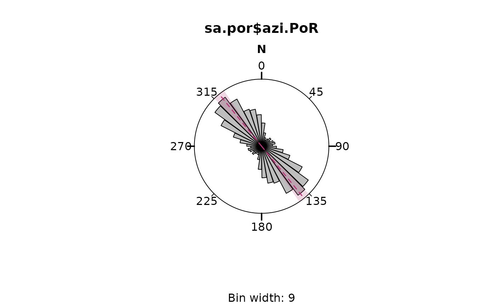

Decompositon of orientation tensor
Examples
test <- rvm(100, mean = 0, k = 19)
ot_eigen2d(test, axial = FALSE)
#> Error in ot_eigen2d(test, axial = FALSE): could not find function "ot_eigen2d"
data("nuvel1")
PoR <- subset(nuvel1, nuvel1$plate.rot == "na")
sa.por <- PoR_shmax(san_andreas, PoR, "right")
sa_eig <- ot_eigen2d(sa.por$azi.PoR, w = weighting(san_andreas$unc))
#> Error in ot_eigen2d(sa.por$azi.PoR, w = weighting(san_andreas$unc)): could not find function "ot_eigen2d"
print(sa_eig)
#> Error: object 'sa_eig' not found
rose(sa.por$azi.PoR)

rose_line(sa_eig$vectors, col = c('blue', 'green'))
#> Error: object 'sa_eig' not found